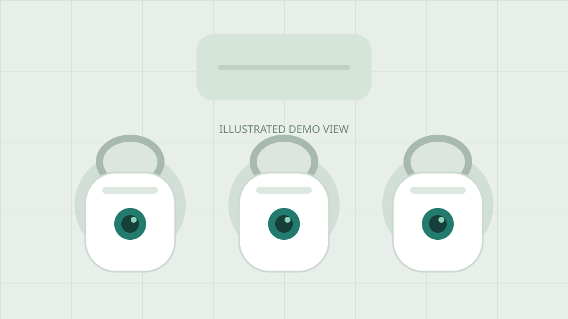
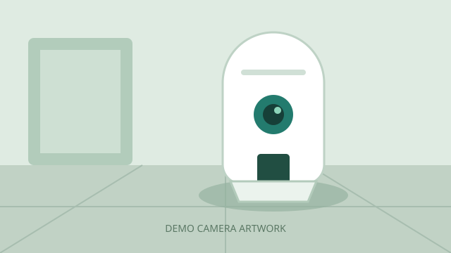

Feeder 2 is camera-only. The selector and copy destinations contain only Feeders 1 and 3. Every camera panel uses original demo artwork.
Disconnected preview · Synthetic meals and camera artwork


Feeder 2 is camera-only. The selector and copy destinations contain only Feeders 1 and 3. Every camera panel uses original demo artwork.